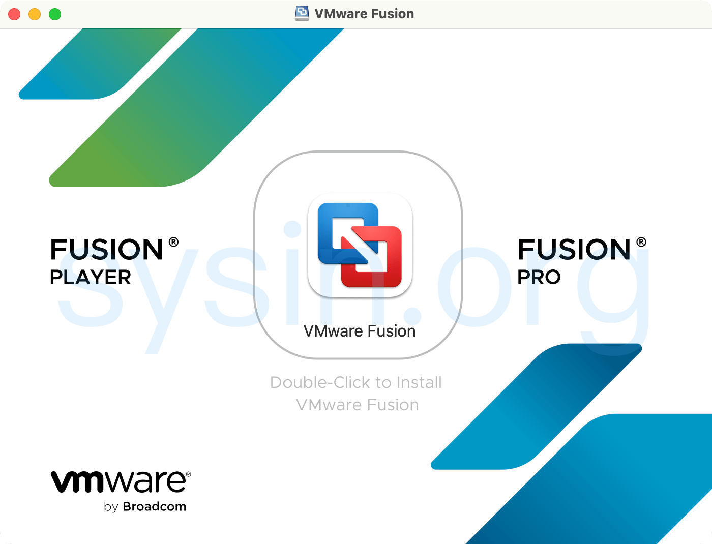

请访问原文链接：VMware Fusion 26H1 for Mac - 领先的免费桌面虚拟化软件 查看最新版。原创作品，转载请保留出处。
作者主页：sysin.org
使用 VMware Fusion 在虚拟机 (VM) 中运行 Windows、Linux、容器、Kubernetes 等而无需重新启动，充分利用 Mac 的强大功能。

2024 年 11 月 11 日，VMware by Broadcom 宣布 VMware Fusion 和 Workstation 现在对所有用户免费。
VMware Fusion：适用于 Mac 的桌面 Hypervisors
在您喜欢的环境中自由地提高生产力、敏捷性和安全性。IT 专业人士、开发人员和企业选择 VMware Fusion 桌面管理程序以获得无与伦比的操作系统支持、坚如磐石的稳定性和高级功能 (sysin)。借助 Fusion Player 和 Fusion Pro，可以在 Mac 上将几乎任何操作系统作为 VM 运行，以在本地桌面上进行开发、测试、游戏甚至模拟生产云。
在 Mac 上运行几乎任何操作系统
在 Mac 上运行 Windows 仅仅是个开始。从数百种受支持的操作系统中进行选择，从云就绪 Linux 发行版到 Intel 或 Apple silicon Mac 上的最新 Windows 11，所有这些都无需重新启动。
改进 vSphere 连接
连接到远程 vSphere 和 ESXi 服务器以启动、控制和管理 VM 和物理主机 (sysin)，提高对数据中心和主机拓扑的可见性。通过拖放操作轻松传输 VM。
设计和演示软件解决方案
凭借在单个 Mac 上运行整个虚拟云堆栈的能力，您可以实时演示完整的解决方案，并通过安全回滚点返回到有用的配置。
VMware Fusion 26H1 新增功能
VMware Fusion Pro 26H1 | 14 MAY 2026 | Build 25388279
VMware Fusion Pro 26H1 包含安全修复和错误修复。
- 记录并报告时间戳：您可以通过虚拟机的创建时间和最后一次开机时间戳，轻松识别虚拟机。
- 新增对基于 ARM 的 ESX 主机远程连接支持，可执行基本虚拟机操作。
- 新增对客户机操作系统的支持。
- Ubuntu 26.04 LTS
- Fedora 43
- Fedora 44
- SUSE Linux Enterprise 16
- openSUSE 16.0
- FreeBSD 15.0
- 此版本修复了 CVE-2026-41702。
虚拟机模板 OVF
本站原创 OVF，适用于 VMware 虚拟化。
- AlmaLinux 10 x86_64 OVF (sysin) - VMware 虚拟机模板
- AlmaLinux 9.5 x86_64 OVF (sysin) - VMware 虚拟机模板
- AlmaLinux 8.10 x86_64 OVF (sysin) - VMware 虚拟机模板
- Rocky Linux 10 x86_64 OVF (sysin) - VMware 虚拟机模板
- Rocky Linux 9.5 x86_64 OVF (sysin) - VMware 虚拟机模板
- Rocky Linux 8.10 x86_64 OVF (sysin) - VMware 虚拟机模板
- CentOS 8.5 x86_64 OVF (sysin) - VMware 虚拟机模板
- CentOS 7.9 x86_64 OVF (sysin) - VMware 虚拟机模板
- Debian 13.5 x86_64 OVF (sysin) - VMware 虚拟机模板
- Debian 12.5 x86_64 OVF (sysin) - VMware 虚拟机模板
- Debian 11.5 x86_64 OVF (sysin) - VMware 虚拟机模板
- Debian 10.13 x86_64 OVF (sysin) - VMware 虚拟机模板
- Ubuntu 26.04 LTS x86_64 OVF (sysin) - VMware 虚拟机模板
- Ubuntu 24.04 LTS x86_64 OVF (sysin) - VMware 虚拟机模板
- Ubuntu 22.04.5 LTS x86_64 OVF (sysin) - VMware 虚拟机模板
- Ubuntu 20.04.5 LTS x86_64 OVF (sysin) optional kernel 5.15 - VMware 虚拟机模板
- Zabbix 7.0 LTS OVF (build with LNMP based on Rocky 8.10) - VMware 虚拟机模板
- Zabbix 6.0 LTS OVF (build with LNMP based on AlmaLinux 8.5) - VMware 虚拟机模板
﹣﹣﹣﹣﹣﹣
- macOS 26 Blank OVF - macOS Tahoe 虚拟化解决方案
- macOS 15 Blank OVF - macOS Sequoia 虚拟化解决方案
- macOS 14 Blank OVF - macOS Sonoma 虚拟化解决方案
- macOS 13 Blank OVF - 在 ESXi 8.0 中运行 macOS Ventura 的简单方式
- AlmaLinux 9 aarch64 OVF (sysin) - Apple silicon VMware 虚拟机模板
- Rocky Linux 9 aarch64 OVF (sysin) - Apple silicon VMware 虚拟机模板
﹣﹣﹣﹣﹣﹣
- Windows Server 2025 OVF (2026 年 8 月更新) - VMware 虚拟机模板
- Windows Server 2022 OVF (2026 年 8 月更新) - VMware 虚拟机模板
- Windows Server 2019 OVF (2026 年 8 月更新) - VMware 虚拟机模板
- Windows Server 2016 OVF (2026 年 8 月更新) - VMware 虚拟机模板
- Windows Server 2008 R2 OVF (2025 年 10 月更新) - VMware 虚拟机模板
﹣﹣﹣﹣﹣﹣
- FreeBSD 14 x86_64 OVF (sysin) - VMware 虚拟机模板
- FreeBSD 13.5 x86_64 OVF (sysin) - VMware 虚拟机模板
- OpenWrt OVF：在 ESXi 8.0、Fusion 13 和 Workstation 17 上运行 OpenWrt 的简单方法
下载地址
VMware Fusion (for Intel-based and Apple silicon Macs) 25H2 - Free
- 百度网盘链接：https://pan.baidu.com/s/1NvEc-xuw0GPpeOBBATYI4g?pwd=r2bb
Name: Fusion-25H2-24995814_universal.dmg
File size: 484.58 MB
Release Date: Oct 14, 2025
SHA256SUM: include
系统要求：macOS Sequoia 15.0 及更高版本
VMware Fusion (for Intel-based and Apple silicon Macs) 25H2u1 - Free
- 百度网盘链接：https://pan.baidu.com/s/1NvEc-xuw0GPpeOBBATYI4g?pwd=r2bb
Name: Fusion-25H2u1-25219963_universal.dmg
File size: 484.42 MB
Release Date: Feb 26, 2026
SHA256SUM: include
系统要求：macOS Sequoia 15.0 及更高版本
VMware Fusion (for Intel-based and Apple silicon Macs) 26H1 - Free
- 百度网盘链接：https://pan.baidu.com/s/1Vpu51BBQHN3zza7uToeONw?pwd=5w3b
Name: VMware-Fusion-26H1-25388279_universal.dmg
File size: 480.71 MB
Release Date: May 14, 2026
SHA256SUM: include
系统要求：macOS Sequoia 15.0 及更高版本
OEM BIOS 版本：VMware Fusion 26H1 OEM BIOS 2.7 - 在 macOS 中运行 Windows 虚拟机的最佳方式
参看：如何修改 VMware Fusion 中的虚机网络 IP 地址段

文章用于推荐和分享优秀的软件产品及其相关技术，所有软件提供免费版或试用版。内容若侵犯了您的版权，请联系作者删除。如果您喜欢这篇文章，或者觉得它对您有所帮助，亦或发现有不当之处；欢迎发表评论，也欢迎分享这个网站，或者赞赏一下，谢谢！提示：捐赠或赞赏属于自愿赠予行为，提交后即表示您对作者的支持与认可。为避免误操作，请在确认前仔细检查金额，支付完成后将无法撤销或退还。
 支付宝赞赏
支付宝赞赏  微信赞赏
微信赞赏赞赏一下
敬请注册！点击 “登录” - “用户注册”（已知不支持 21.cn/189.cn 邮箱）。 请勿使用联合登录（已关闭）。